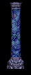

Golden sweat traced his jawline.Discomforted in the unrelenting heat he stripped back his shirt sleeves and with passing humor noted the development of his sunburns. Within a month he doubted even his closest of kin would recognize him; his moonlight pale skin tinged a light almond color and his brownish hair streaked with golden highlights. All things considered, he felt very differently about himself now, felt more aware that there were bigger problems in the world than his own. Still, it was difficult not to dwell on his sudden... disability.
Owyn contemplated resuming the meditations that had occupied him the length of the morning, but decided that in the space of four hours he had learned nothing he hadn't already deduced intuitively. For some reason, his magical abilities were useless in this alien environment and the prospect frightened him nearly beyond reason.
"Another week beneath this strange sun and I shall seem pale next to you." Gorath shouted as he hiked back up the path, the dark strands of his hair dancing in a hot breeze. "This magician Pug must walk without leaving footprints! I can find no evidence of him. How progress your meditations?"
Owyn shrugged. "No luck. I've tried everything from lesser path cantrips to greater path incantations. Nothing works. It's almost as if there were no manna here."
Arching his brows inquisitively, Gorath motioned for the boy to continue.
"Most people misunderstand the way that magic works," Owyn explained. "As a magician, I don't have power within me. All I know are a series of words and actions that help me gather the power, or manna, from the natural world. If, however, there is no manna for me to collect, then all of my magical training is futile. I'm powerless."
"Would the same be true of Pug?"
Owyn nodded. "He would be as helpless as I am, worse perhaps. If I were accustomed to having the kind of command that he has and suddenly lost it..."
"He could be in very dire danger," Gorath said, finishing the thought. Leaning over, he fetched Owyn's staff from where it lay discarded in the sand. "I think that makes our journey all the more urgent."
| ENTERING A DWELLING (Cache) |
Gorath opened the door.Inside the alien structure they found a variety of odd shaped objects, some made of wood, others fashioned from rock or crystal.
"I feel strange vibrations in the air here," said Owyn. "This place is unlike the others we have seen, perhaps we should look around."
| FINDING A CRYSTAL STAFF |
Owyn nudged open the strange door.He gritted his teeth, waiting for a surprise attack. When none came he pushed the door open a little further and walked inside.
He was stunned to find each wall completely covered with indecipherable symbols and markings. His attention was also drawn to a dark colored box in the far corner of the room. Moving closer to it he felt a strange tingling in his fingers, a sensation not unlike the one he felt immediately prior casting a particularly powerful spell. The feeling pulled him in, and without even being aware of the possible dangers involved he grabbed the box and threw open the lid. Inside he found a dark crystal staff!
Holding the staff in his left hand he held up his right palm and whispered a simple incantation. Flames leapt from his hand.
"I can't explain it," Owyn said. "But this staff has rejuvenated my magic. It's as though the staff has been formed of -- I don't know -- crystallized manna."
| PANTH TIANDN COMBAT DIALOGUES |
|
The enemy was surprised. "These creatures resemble the serpent men," Gorath hissed as they rushed forward. "When we had dealings with the Pantathians during the Great Rising, even Delekhan despised them. If these are any kin, I would have every last one of them dead." "You may get your wish," Owyn replied. "Assuming they don't kill us first..." |
The enemy was not surprised. Unsure how best to deal with the situation, Owyn shot a glance at Gorath, but was startled by the look of malignant hate in the warrior's eyes. "These creatures resemble serpent men. Even Delekhan despised them. If these are any kin, I would have every last one of them dead. "You may get your wish," Owyn replied. "Assuming they don't kill us first..." |
The enemy approached. Unsure how best to deal with the situation, Owyn shot a glance at Gorath. "These creatures resemble the serpent men," Gorath observed coldly. "When we had dealings with the Pantathians during the Great Rising, even Delekhan despised them. If these are any kin, I would have every last one of them dead." "You may get your wish," Owyn replied. "Assuming they don't kill us first..." |
| PANTH TIANDN AMBUSH DIALOGUES |
| WARNING | AMBUSH | ENTER |
|
Gorath approached the strange dwelling.
Head tilted slightly to one side he stared intently at the ground, listening,
his eyes darting back and forth like fish in a bowl. At last he raised his head, "I cannot be certain, but I have a strong feeling we will be very unwelcome visitors here." |
Something inside the dwelling slithered. "I didn't much care for the sound of that," said Gorath. "Perhaps we should -- " His sentence hung in the air, unfinished, as the door slammed open. He suddenly found himself facing off against a snake-like creature that seemed very intent on making sure that it would never again be bothered by them. |
Gorath approached the strange door. Nudging it open he peered into the building, and finally assured that they were alone, went inside. "Let's have a look around," he said. "Perhaps we'll find something in here we can use." |
|  |
THE SEVEN PILLARS OF KARZEEN MAUK NORTH SECTOR |
Something inhabited the column.Alerted as much by a feeling that they were being observed as by the strange light which throbbed within the pillars, Owyn felt they should exercise caution in dealing with the alien ruins.
| PILLAR ASLEEP | PILLAR INVALID (?) |
|
Owyn waited. When at last it became clear that the entity within was beyond reaching, he removed his hand from the crystalline pillar. "Gone," Owyn said. "Either it's sleeping or it's died. I can't tell which." |
Owyn reached out to touch the column. Running his hand across the cool marble, he could feel a crackling energy nibbling at his fingers like a thousand pinpricks. It was not a painful feeling, but it made him nervous and he quickly withdrew his hand. "This column seems to possess some sort of magical energy," he said. "But I cannot even begin to tell you its nature. Perhaps we should take a look at the others as well." |
| SOUTH-WEST PILLAR (Assessment Bonus) |
The pillar was smooth to his touch.Towering over Owyn, it seemed to be made of an exquisite crystal of some fashion, though it was wholly unlike anything he had ever seen on Midkemia. Through it he could see refracted images of the desert beyond, but when he varied the angle at which he held his head, it seemed as though he could see other places which were not on the other side of the column. Instead, it seemed that there were images of oceans and skies of other colors.
Your observations intrigue me. You are savani, are you not?
Startled at the presence of the alien sentience in his mind, Owyn shook his head. Unsure whether he should simply think his reply or speak it aloud, he decided that speaking it would be the safest route. "I'm not familiar with the term savani so I don't know if I am one or not. Who am I communicating with?". Nearby, Gorath threw Owyn a startled glance, apparently alarmed that his friend was speaking to the air. Before Owyn could rattle off an explanation, the voice within his mind returned.
I am Sutakami, Mother of the Thousand Mysteries, once goddess of Timirianya. You have summoned me. What do you desire to know?
"I am not sure what you are asking," Owyn said. "Are you an oracle?"
No, the voice replied. I may only tell you that which is already known, though I dimly perceive things that may come to be. I sense you are newly come to this world. Perhaps you would desire to see something of the creatures who inhabit the desolation of our world...
Suddenly Owyn's mind reeled with visions of men with scales rather than skin and large hulking creatures with shining carapaces which roamed the deserts. Grasping to retain what he learned about the creatures as the information flooded through his mind like a tide, he at last seized upon an image of a wispy figure.
"What are these things I see?" Owyn asked. "They look as if they are made of smoke."
They are the ancient servants of Relynn Skarr, the last priest of Dhatsavan before The Desolation. Creatures of magic, they can only be killed by special spells which drain directly from their materiality, their strength. Now they still wander the ruins of Dhatsavan's ancient Temple. For a moment the image wavered, then stabilized once more. I must rest... I am needed... elsewhere.
| CENTRAL PILLAR (Strength Bonus) |
Energy blasted from the column.Dazed, Owyn picked himself up from where he had fallen in the sand, reaching for a hand up from Gorath. "There was this...presence...that was in the column. When I touched it I felt as if I would kill every single Panath Tiandn on the face of this world...as if I could have strangled them all barehanded, and then the feeling was gone."
"It is strange you should mention it, but I am feeling suddenly vigorous myself. But what are these Panath Tiandn?" Gorath replied. "It is an unfamiliar term."
"The snake men that we've run into. I'm not sure why I know that, but I know that is what they are called on this world."
| EAST PILLAR (No Effect) |
There was something odd about the column.Removing his hand, Owyn struggled to find words for what he was feeling. "You know how it is when someone is standing behind you, and you know that they are standing there, even though you haven't heard them come up?"
Smiling faintly, Gorath shrugged. "It is a sensation I have heard of, but I am afraid that is an experience almost unknown with my kin." Reaching up, he tugged one of his ears. "There is little that escapes our hearing."
"Oh." Looking down at the ground, Owyn suddenly flushed, realizing how little he truly knew about Gorath or his people. One day he would make a point of getting to know him better. "Well, I don't know how to explain what I felt in the pillar except that it felt alive. Like there was a presence within it, if only I knew how to reach it."
| WEST PILLAR (Defense Bonus) |
Warmth radiated from the column.At first Owyn assumed that the crystal was radiating heat reflected from the alien sun, but even on the side away from the glare, the pillar seemed equally warm.
I may do little for you, a feminine voice asked quietly in his mind. This much, and no more...
Suddenly the sensation of heat grew, washed out from pillar like a warm breeze, shifting the sand beneath their feet and pressing out in the deserts beyond. In a brief second the wind was gone, leaving the pillar cold and quiet.
| NORTH-WEST PILLAR |
The pillar was made of crystal.In better condition than the others in the circle, its reflective surface was not as pitted by the blast of the sands as the others had been. Stroking its surface, Owyn marvelled at the amount of work it must have taken the craftsmen to make.
"I wonder what this place was originally," Owyn asked, not expecting the mental reply which flooded his senses.
You stand in the ruins of Karzeen Mauk, once the high temple of the seven gods of Timirianya. Once, these columns were only symbols of the gods, crafted by the savani artisans who were the servants of Dhatsavan. Now they are the vessels within which we have taken refuge.
"Refuge? What drives a god into refuge?" Owyn asked. "I wouldn't think it would be possible."
Valheru, the voice said. Though without a true voice it was impossible for Owyn to tell, but there were shadings within it that seemed a mixture of hate and sorrow. Those who were known as the Valheru extinguished all life as we knew it here, using this as a battleground where they warred with all who dared challenge their universal supremacy. Only when Dhatsavan showed to us that our struggles would be futile did we create a plan by which we could drive out their hordes of Pantathians and Kadaand Xekka'mati...
"What did you do?" Owyn asked. A long silence greeted him before a distant reply came to him.
Of the Seven Who Ruled, there are only six of us who survived The Desolation. Two have faded so far from the world they can no longer give voice to their thoughts, but instead are little more than sentient forces of nature. Only Dhatsavan will remain, waiting for the time of the Awakening. He shall call us when the need has come... We shall not speak again, savani.
| NORTH-EAST PILLAR (Health/Stamina Drain) |
The crystal was cold.Unnerved by the unnatural chill of the object in the blistering desert heat, Owyn moved away from it, aware that he suddenly felt very ill, noticing that Gorath looked likewise as distraught.
"Let's not toy with that artifact again," Gorath scolded. "I have a very bad feeling about that pillar."
| SOUTH-EAST PILLAR: DHATSAVAN - WITHOUT CUP |
| FIRST VISIT | SECOND VISIT |
|
Owyn hesitated. Shimmering in the hellish alien heat, it seemed probable the sun warmed crystal would blister him if he touched it, but he was curious what material the glass-like pillar had been made of. Privately he wondered if the serpent people they had encountered in the desert plains had been responsible for the enigmatic monoliths, but somehow the idea seemed wrong to him. No. The Pillars of Karzeen were not crafted by the Panath-Tiandn, a voice whispered in his mind. We made ourselves... Horrified by the sudden, uninvited intrusion of the alien presence within his mind, Owyn drew back from the column, but the intruder remained. We seven were the gods of Timirianya, savani. I myself was once Dhatsavan, Lord of Gates. But once the Valheru brought their wars of desolation, we narrowly averted the great star death... "I don't know what any of the things you are saying mean," Owyn replied. "I have heard a very little bit about the elven old ones called the Valheru, but beyond that..." It is unimportant, savani, the voice said. What we were is lost beyond regaining, but there is time yet to save your people from the same fate. "Our world?" Owyn asked. "The Valheru have been dead on my world for time beyond reckoning. They can't pose any threat to us..." A feeling of disinterest washed through him as the god brushed aside the question. The one you know as Pug of Stardock will tell you more when the time comes for you and the Wanderer to make your choices. For now, you must bring to this place the Cup of Rlnn Skrr. Do this and we will free Pug from his captivity... Suddenly suspicious about the nature of the entity which spoke to him, he worded his reply carefully. "If you are a god, why do you need me to fetch a cup for you? And why should I trust a bodiless someone who claims to have imprisoned the one we look for?" You are wise to question, the voice replied, but it is mine alone to know this truth. You may do as I ask and bring to me the Cup of Rlnn Skrr or you may perish in the desolation of Timirianya. The choice is yours. I warn you however it would be an unwise decision to utilize its powers. Pug already has learned this lesson. |
Owyn tensed. For a moment he feared what the god's reaction would be once he learned that he had returned without the Cup, but it seemed logical that he wouldn't be struck dead for it. On the balance of things he felt rather skeptical about the true nature of the voices in the stones, but for now he would have to keep his suspicions to himself. You still doubt, Dhatsavan said, speaking within his mind. It is good you do, for it will be a quality which shall keep you alive in the future. Do as you will. We require the Cup of Rlnn Skrr returned to us. "But where do we find this Cup?" Owyn asked. "We are strangers here..." You will find that the Panath Tiandn hold it near the southeastern end of this isle. It is from them you must retrieve it. |
| SOUTH-EAST PILLAR: DHATSAVAN - WITH CUP |
| NOT VISITED BEFORE | ALREADY VISITED |
|
Owyn hesitated. Shimmering in the hellish alien heat, it seemed probable the sun warmed face of the column would blister him if he touched it, but he was curious what materials the glass-like pillar had been made of. Privately he wondered if the serpent people they had encountered in the desert plains had been responsible for the enigmatic monoliths, but somehow the idea seemed wrong to him. No. The Pillars of Karzeen were not crafted by the Panath-Tiandn, a voice whispered in his mind. We made ourselves... Horrified by the sudden, uninvited intrusion of the alien presence within his mind, Owyn drew back from the column, but the intruder remained. We seven were the gods of Timirianya, savani. I myself was once Dhatsavan, Lord of Gates. But once the Valheru brought their wars of desolation, we narrowly averted the great star death... "I don't know what any of the things you are saying mean," Owyn replied. "I have heard a very little bit about the elven old ones called the Valheru, but beyond that..." It is unimportant, savani, the voice said. What we were is lost beyond regaining, but there is time yet to save your people from the same fate. You have brought the Cup of Rlnn Skrr to us and that is of the utmost importance. The abandoned progeny of the Pantathians will now be denied access to the Hall. We can be assured they will never again hear from their Midkemian mistress, though their reestablished contact with their brethren holds dire consequences for the future of your world. But for now you have no need of concern. The cup's powers may now be subdued until the time it is needed again... "Since we appear to have done you a favor, may we ask one in return?" Owyn asked. "We are looking for one named Pug." He too has shared a destiny with the cup, but his was a crueler fate. He misapprehended the scope of the cup's powers. When he wakened its powers to seek the mind of his lost daughter, it overwhelmed him and reduced him to little more than a helpless child. We sent him to a structure constructed by the Panath Tiandn. The protective barrier that has kept him within will be removed once you locate him. "You imprisoned him so you could protect him?" Owyn guessed. "To save his life?" An amused quality lent itself to the god's mental reply, though Owyn felt certain such feelings were beyond a god. As an individual he is of little interest to us, but we saved his life in honor of a kindness done for the last survivor of our world's holocaust by one known as Macros. He knew of these events and asked that the one known as Pug be sheltered until you returned here with the cup. Already he has regained most of his identity and memory, but his abilities will yet be impaired for some months. You will also find that the way is open to a place that would have gained you your deaths if you had gone there, the ancient lands once occupied by the Valheru during their wars here. There are artifacts there that may be of help to you in your quest. You may now leave, but take the cup with you. With it you may teach Pug the spells you know. It may even be that it holds some greater destiny for you... |
Owyn touched Dhatsavan's column. Feeling the familiar presence stir within, he waited patiently for the entity to respond to his mental call. You have returned with the Cup, the voice said calmly. That is well. The abandoned progeny of the Pantathians will now be denied access to the Hall. We can be assured they will never again hear from their Midkemian mistress, though their reestablished contact with their brethren holds dire consequences for the future of your world. But, for now, you have no need of concern. The cup's powers may now be subdued until the time it is needed again. "Pug's welfare still remains," Owyn said firmly. "We have run to the limits of this island for you, now we wish to know where you have kept him." He is safe within a structure constructed by the Panath Tiandn. The protective barrier that kept him within the structure will be removed once you locate him. He misapprehended the scope of the cup's powers. When he wakened its powers to seek the mind of his lost daughter, it overwhelmed him and reduced him to little more than a helpless child. "You imprisoned him so you could protect him?" Owyn guessed. "To save his life?" An amused quality lent itself to the god's mental reply, though Owyn felt certain such feelings were beyond a god. As an individual he is of little interest to us, but we saved his life in honor of a kindness done for the last survivor of our world's holocaust by one known as Macros. He knew of these events and asked that the one known as Pug be sheltered until you returned here with the cup. Already he has regained most of his identity and memory, but his abilities will yet be impaired for some months. You will also find that the way is open to a place that would have gained you your deaths if you had gone there, the ancient lands once occupied by the Valheru during their wars here. There are artifacts there that may be of help to you in your battles. You may now leave, but take the cup with you. With it you may teach Pug any of the spells you know. |
| DHATSAVAN: AFTER BRINGING CUP |
Owyn touched the column.Beneath his fingertips, a slight tingle presaged the fusion of the god's mind with his own.
What is that which you require?
"We have been unable to locate Pug as yet," Owyn said. "Where exactly is he? I have difficulty telling directions in this place."
As time grows short as you measure such things and it is of small moment to perform this action, I shall open a small gate for you, and in passing you shall be sent unto him."
Before the god had finished his statement, a blinding flash of light coruscated from the pillar and obliterated the world, a sensation that was vaguely reminiscent of the passage through the gate between Midkemia and Timirianya.
| DHATSAVAN: PUG'S VISIT |
Pug studied the column.When he had visited the site at Karzeen previously, he had sensed the sentience that radiated from them, but had been unaware of the true nature of the beings who inhabited them. Stepping forward, he made a slight bow.
"Greetings, cousins of the Aal," he said. "I regret that I did not recognize you on my first visit. My apologies. It was only during the time I was in the tent that something the Oracle spoke of once occurred to me."
Apologies are unneeded for such as we, savani, but we accept your tribute. Your safety was greatly prized by Macros.
Pug nodded. "He has been a true friend to me, only as one other has ever been. It is an honor that he prized me so highly. I sometimes wonder that he will ever stop protecting me."
You have not come to us to waste thanks on us, one called Pug. What do you wish from the gods of Timirianya?
"I came here in search of my daughter, Gamina. A magician, a savani by your terms, brought her here against her will. It is important that I find her and return to my home to avert a possible catastrophe. Forces are gathering to tamper with the Lifestone."
For a moment there was silence, the only motion in the air made by the rasp of the sands moving in the deserts. Then, quite abruptly, Dhatsavan's voice returned.
Your daughter is caged by Panath-Tiandn. They believe her an omen that Alma-Lodka has heard their pleas and is preparing the way for her return.
"Is she in any danger?" Pug asked. "Is there something you may do for her?"
No, Dhatsavan replied. Such as my powers once were, they are limited, part of the price we paid for continued existence.
"You exhausted your essence when you crystalized the manna to drive off the Valheru. When their magical abilities seemingly began to wane, they assumed they had tapped the manna of the planet dry and moved on."
Your speculations are deft, savani. But the gods of Timirianya are not yet dead. We will abide until the time comes when we either sleep or until we can be reborn through these children of the holocaust. Perhaps once they have forgotten Alma-Lodka and the rest of the Valheru, they can mature in their own ways.
Pug accepted the information calmly and began to turn to leave, then halted. "Has Makala placed any special spells around her? I am very limited in my abilities at present..."
Seek the old hordes of the Valheru. There may be something there to assist you. Farewell, Pug. Dhatsavan shall speak no more.
Pug waited.
When at last it became clear that Dhatsavan was beyond reaching, he removed his hand from the crystalline pillar. "He is gone," Pug said. From now on, we must help ourselves."
OWYN: Seek the old hordes of the Valheru? I do not understand...PUG: I gather you do understand how this place was not always as it is now. At some point, after Gamina is safe, please inquire further... As for now, it is enough to know that when the Valheru left this land they left behind something else as well. Whatever it is, it would be buried, like their ruins. For it to have remained intact for so many years, it must have been protected by some sort of magical defense...perhaps one produced by the Pillars.
| If Valheru Alley | If NOT Valheru Alley |
|
GORATH:
Owyn and I were unfortunate enough to have encountered a strange defense centered in the
southwest corner of the isle. PUG: Do not judge in haste, perhaps you were fortunate. We now know the location which we must soon reach. We will be unharmed by the defenses this time. PUG: Prepare yourselves. We journey to the southwest. |
OWYN:
Gorath and I have never come across any such defenses here. PUG: In my search I was able to cover all but the southern end of the isle. We should start there... GORATH: We have searched the southeast end of the isle, which leaves only... PUG: Prepare yourselves. We journey to the southwest. |
| PUG'S PRISON - BARRIER |
| Before Dhatsavan | After Dhatsavan |
|
Owyn yelped. Rubbing his nose, he stared in confusion at the scene before them. Some invisible force was preventing them from moving forward. OWYN: Seems we've run into some kind of magical barrier here. Whoever, or whatever, is inside apparently doesn't want us coming in. GORATH: How can this be possible if one may not perform magic in this place? OWYN: You haven't been paying attention to what I said. It's not impossible, just very difficult. Whoever has constructed this magical barrier has access to a huge amount of manna. GORATH: Perhaps Pug is somehow responsible for this. OWYN: That Pug is involved seems likely, but my instincts tell me he didn't construct this. Why put up a force barrier around a tent? I would imagine his priority here is to find wherever it was that his daughter Gamina disappeared to and get back home. GORATH: Then you suspect that this tent is somehow a means of imprisonment? OWYN: Something along those lines, yes. Either for Pug or Gamina or the both of them. We have to find who has the manna and discover what it is that they want before they will set Pug free. |
OWYN:
Seems we've run into some kind of magical barrier here. Whoever, or whatever, is inside
apparently doesn't want us coming in. GORATH: How can this be possible if one may not perform magic in this place? OWYN: You haven't been paying attention to what I said. It's not impossible, just very difficult. Whoever has constructed this magical barrier has access to a huge amount of manna. GORATH: Perhaps Pug is somehow responsible for this. OWYN: Actually... This must be where Dhatsavan has him imprisoned! Pug must be inside here! GORATH: The voice you heard within the pillars? OWYN: Yes... Well, at least we will know where to come and get him once we've retrieved this cup that he wants. Let's get back to searching... |
| PUG'S PRISON BARRIER - RE-ENCOUNTER |
OWYN: Seems we've run into another corner of the protective barrier. Let's try going another direction.
| PUG'S PRISON - BARRIER DROPPED |
There was motion in the tent.Pushing back the strangely woven doorflap of the tent, a short man stepped forward and squinted at them. Unassuming in most respects, he walked casually forward, as if it were not at all unexpected that he would find humans in the strange desert world.
PUG: Where is Tomas? It is important I speak with him.
OWYN: He was unable to come and he sent us after you. He gave us the spell which you left to him...
PUG: Unable to come? Why? What has happened to him?
OWYN: He was injured during an attack on Elvandar by the moredhel. Queen Aglaranna assures us that he will be all right...
PUG: I can't believe that Makala's plans would be served by sending you here, so for the moment I will have to trust your word... In looking at you, it occurs to me your face is familiar. Are you the magician boy who came into Krondor with Seigneur Locklear a few months ago?
OWYN: Yes, and you remember Gorath?
PUG: His face has been hard for me to forget these last few nights. He was the first tool of Makala's in this grand scheme...
GORATH: You accuse us of being liars and spies?
PUG: I'm not implicating you were a willing participant, Gorath. You were as unknowing in your part as I must assume Delekhan is in his. When you said he had raised the war banners of Murmandamus over Sar-Sargoth, I became somewhat alarmed.
PUG: Having seen Murmandamus' death with my own eyes, I had no reason to believe he still lived, but forces acting in his name caused the calamity at Sethanon and I thought it possible the Pantathians were once again responsible. After some investigation I found they were indeed interfering with affairs in the Kingdom, but were acting through a band of magical thieves searching for various magical items - trinkets - in no way directly responsible for what was happening in the Northlands or posing immediate threat to Midkemia... With the issue resolved, I believed then Delekhan was merely exploiting the reputation of his predecessor to gain power...
OWYN: So then what did Gorath tell you that was so important?
PUG: It was only after Makala tricked me into coming here that Gorath's testimony to Prince Arutha took on any significance. In passing, he had mentioned Delekhan wearing a helm of black, shaped like a dragon. Murmandamus wore such a helm and had it with him when Prince Arutha cut him down... Whoever had given Delekhan Murmandamus' helm had to have had been inside the caverns beneath Sethanon.
PUG: There are only four magicians I can think of who might have had the wiles to slip inside the first perimeter of defenses that have been placed there. One is Macros, but since he was instrumental in averting catastrophe there, I cannot believe he would be responsible. Another is a magician whom Macros once told me of, named Nakor the Isalani; but again, I have reason to believe the Northlands would hold little interest for him. The only others who would be capable are Elghar and Makala, but Elghar has been quite busy with his students at Stardock...
OWYN: Leaving your only suspect as Makala. But why is he doing all of this? Why would he be pushing Delekhan into a war with the Kingdom?
PUG: If he was ingenious enough to get within the caverns, he would still need considerable help achieving his final objective - a chamber containing an artifact of unbelievable destructive power about which he has been indefatigably interested. I left behind a dragon to guard it, and even my powers would be sorely taxed in a single battle against a dragon her age, let alone one with the special capabilities of the one who sleeps under Sethanon. Once she is alarmed, she will no doubt summon help from a secret garrison of soldiers which King Lyam ordered to remain in the region of Sethanon, soldiers whom Makala surely would have detected on his first visit and intends to counter with Delekhan's moredhel troops...
OWYN: But that's why Prince Arutha sent us to find you! He's afraid that Delekhan is going to have magicians working at the siege at Northwarden! Maybe if we can stop them there...
PUG: Unfortunately, I'm of no use to anyone at the moment, let alone Prince Arutha. In my blind haste to find Gamina, I used a magical artifact that would have best been left alone...
OWYN: We already know something about it. You said before that you were going to have to trust us, so you'll have to trust me now when I tell you I think I can help. I hope for all our sakes that I'm not wrong about this...
| CUP OF RLNN SKRR - Owyn alone |
Owyn trembled as he attempted to summon the powers confined within the cup. At the edges of his mind he felt a strong presence, as if something wished to intrude upon his consciousness. Only with the greatest strength of will was he able to drive off the darkness within the artifact..."I don't think...this is...the time to use...this," Owyn gasped, staring at it. "Perhaps Pug will understand it..."
| CUP OF RLNN SKRR - Owyn AND Pug |
|
Pug shook as he lifted the jeweled Cup of Rlnn Skrr, feeling power flare within the jeweled
artifact. In ever expanding circles, his consciousness stretched outward, touched on the minds
of those with whom he travelled, finding awe, confusion, fear, pain, knowledge... With jarring suddenness Owyn's mind was joined to Pug's, each dazed by the intimacy of the contact. Concentrate on what you know of spellcraft, Pug thought. I shall do the same, though in my debilitated condition, I think I shall benefit more from this than you. |
Pug shook as he lifted the jeweled cup, feeling power flare within the jeweled
artifact. In ever expanding circles, his consciousness stretched outward,
touched on the minds of those with whom he travelled, finding awe, confusion,
fear, pain, knowledge... With jarring suddenness Owyn's mind was joined to Pug's, each dazed by the intimacy of the contact. Concentrate on what you know of spellcraft, Pug thought. I shall do the same, though I still believe I shall benefit more from this than you. Most of what I remember of spellcasting is that which you have given to me. It is possible I may never fully recover what I knew before... |
Pug shook as he lifted the jeweled cup, feeling power flare within the jeweled
artifact. In ever expanding circles, his consciousness stretched outward,
touched on the minds of those with whom he travelled, finding awe, confusion,
fear, pain, knowledge... With jarring suddenness Owyn's mind was joined to Pug's, each dazed by the intimacy of the contact. The artifact has jarred a memory, Pug thought. I'm recalling an incantation now...I will try to retain the thought... |
|
Owyn stirred and found that Gorath was standing over him, a look of concern on his face. "I was
wondering about you two," he said. "How long was...were we out?" Owyn asked, sitting upright. "Two days," Gorath replied, smiling at Owyn's startled reaction. "It is a good thing you both had presence enough of mind to eat when I put the food into your hands." |
Owyn stirred and found that Gorath was standing over him, a look of concern on
his face. "I had concern for your health," he said. "How long was...were we out?" Owyn asked, sitting upright. "A long time," Gorath replied, smiling at Owyn's startled reaction. "It is a good thing you both had presence enough of mind to drink the water I brought you." |
| LEAVING PUG'S PRISON |
GORATH: I mean to infer no rudeness, but where is our destination?PUG: We must find my daughter, Gamina! In my current state, I am unable to reach her mind. I know not of your travels, but I was not able to complete my search.
GORATH: Then we shall continue our random wanderings?!
PUG: I have no desire for our search to be random. Assistance may lie to the north at the pillar of Dhatsavan, Lord of the Gates. While trapped, I found my mind focusing there...
OWYN: We know the pillar of which you speak.
PUG: Then lead the way, my friend...
| CUP HOUSE |
|
The door burst open. The creatures that streamed out formed a curious formation, as if they were trying to protect something inside the strange little dwelling. Unsure how best to deal with the situation, Owyn shot a glance at Gorath. A heartbeat later, the battle was joined. |
Their approach was undetected. Charging forward, Gorath finally caught a good glimpse of his opponent and wished he hadn't. The strangeness took his breath away, and glancing over his shoulder at Owyn, he gasped, "We may have made a grave mistake..." |
| VALHERU ALLEY BARRIER - FIRST WARNING |
Owyn gasped.Clutching the knotted muscles of his gut, he looked despairingly at Gorath who appeared to be in the same condition.
| IF Pug's Prison | IF NOT Pug's Prison |
| OWYN: We must have come across another magical perimeter, like the one we ran across around the tent. I get the feeling they don't wish for us to move through this area. | OWYN: It's some kind of magical perimeter. Someone wishes to keep us from moving ahead in this direction... |
GORATH: I feel as a cow led by a drover. Turn this way and that...OWYN: There is always the option of pushing ahead. Other than the pain, there doesn't appear to be anything keeping us from heading in this direction. But then again, it may only be a warning of things to come.
GORATH: The choice is yours, Owyn. We may proceed south or we turn back. Either way, I care not.
| VALHERU ALLEY BARRIER - SECOND WARNING |
Owyn screamed.A wave of pain hammered through him, forcing him to his knees. Next to him, Gorath seemed equally as affected by the magical force.
GORATH: "It is even more...acute...than what I experienced on our trip to Elvandar. The power is...immense."
OWYN: "Even if it was...half as painful...I don't know how you bore it. I'm inclined to turn back..."
| VALHERU ALLEY BARRIER - FINAL WARNING |
Light exploded in Owyn's brain.You defy the edicts of the gods of Timirianya and endanger the good of all. You both now shall pay for your heresy, offworlder savani...
For a moment a brilliant image formed in his mind -- seven crystal columns glittering in the sunlight -- and then pain coursed like a river through him, flooding him away into deathly oblivion.
| TEMPLE OF DHATSAVAN (Riftworld Dungeon) |
| ENTER | EXIT |
|
The door was unlocked. Cracking it open, Pug peered into the formless darkness of the shaft. When no one replied to his shouted greetings, he turned to Gorath. "No one down there," Pug said. "Might be interesting to take a look around. Feel like blundering around in the dark for a few minutes?" YES: An hour passed. After moving through a long stairwell that seemed to twist and wind in unexpected directions, they found themselves standing on an earthen floor... |
Daylight filtered in from above. "This way leads out," Gorath said. "Are you sure you're ready to get moving again, Pug?" YES: Light guided them. Following the ascending shaft into daylight, they emerged at last on a path leading to the south. |
| STRANGE STONE SLAB |
The slab was strange.
Slightly larger than a fully grown dwarf, the stone seemed very old and Owyn wondered if it might have been part of some ancient religious ritual.Gorath approached the slab.
He studied it carefully for several minutes, tracing his finger over the twelve unintelligible symbols which were carved into the rock face. "It appears to be nothing more than a large stone slab," he said. "I was rather hoping there might be something else about it. As prominent as it is, I was thinking perhaps it might have a notch or a groove in it somewhere. Perhaps it's a marker of some kind..."
| FINAL COMBAT (Two Wind Elementals) |
| Without Pug | With Pug | With Pug |
|
A foul smell filled the air. Somehow, the creature before them had sensed their presence, and now was turning to attack. Owyn gasped at the strangeness of it, and turning to Gorath, he shouted, "We may have made a grave mistake..." |
Their approach was undetected. For a moment Pug froze, whispering, "Gamina!" Though the confrontation would be difficult, this was a moment he had long waited for. "These bastard subservients of Makala must die," he thought as he advanced into battle. |
The creature turned to attack. For a moment Pug froze, whispering, "Gamina!" Though the confrontation would be difficult, this was a moment long waited for. "These bastard subservients of Makala must die," he shouted as he advanced into battle. |
PUG: She lives. Makala has many blessings to count.PUG: Gorath, see if you can do something about the cage...
GORATH: Cover your head and stand back!

Pug took Gamina into his arms.
Eyes glistening with relieved tears, he hugged the girl tight to his chest and for a long moment he simply held her, his head resting in her silver-white mane of hair, while he mulled through recent events. At last he slipped a finger beneath her chin, gently lifted, and allowed his gaze to lock with hers as they initiated the special mind-speech that had been Gamina's gift since birth.
He was lying father, all that time, Gamina thought. Even when he brought me here. He was trying to get you away from Krondor!
I know, I know, Pug thought in return, pushing a stray wisp of her hair into place. I shall have to see you better guarded in the future. I had always supposed that your gifts would keep you safe from harm, but I see my pride in you sometimes borders on the dangerously arrogant. We must be more careful. Agreed?
Agreed.
Again she hugged herself to him. Feeling her faint nod, he released her and kissed her forehead, looked to where Owyn and Gorath stood at the cave mouth. Curiously, the squire was bent double, his face buried in his hands as he shook with violent coughs.
"I'm okay," Owyn wheezed, waving his hands, occasionally stealing glances at Gamina. "Really, I'll be fine."
Pug smiled. The boy's theatrics were poor, but it was manifestly obvious he wished an introduction before his lungs collapsed. "Gamina, this hacking young ruffian is Squire Owyn Beleforte of Tiburn. Both he and Gorath have been instrumental in helping find you. Perhaps we should have them down to Stardock for dinner someday."
"Stardock?" Owyn's performance faltered at the mention of Pug's Academy of Magic. Realizing his lapse, he coughed tentatively into his hand. "You mean, the Stardock?"
"None other." Pug frowned as he drew out a small multi-faceted stone from the folds of his robe. "This special pattern stone should take us there, but we have to drop off Gamina before we attend to our business."
"We will go to join Prince Arutha?" Gorath asked.
"No," Pug replied, clapping his hands overhead. "We go to Sethanon!"